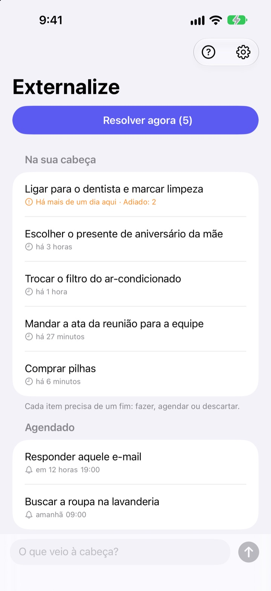
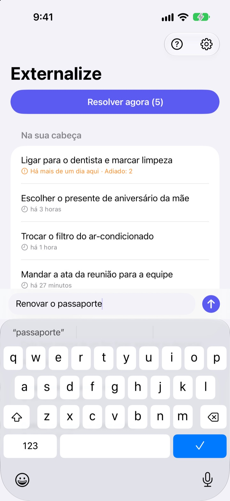
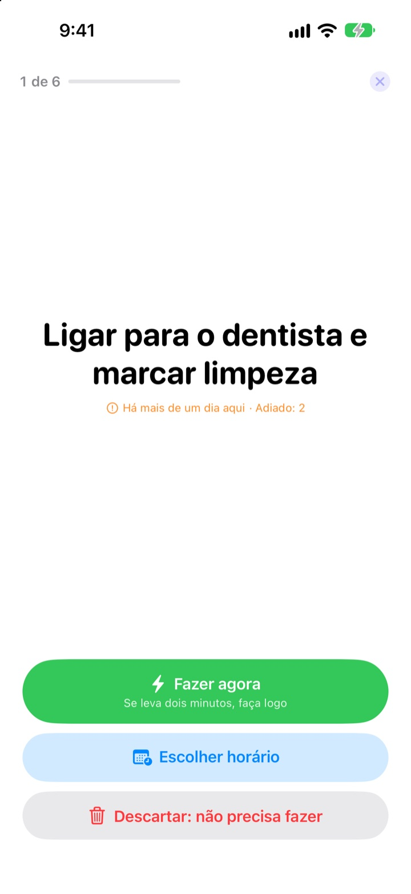
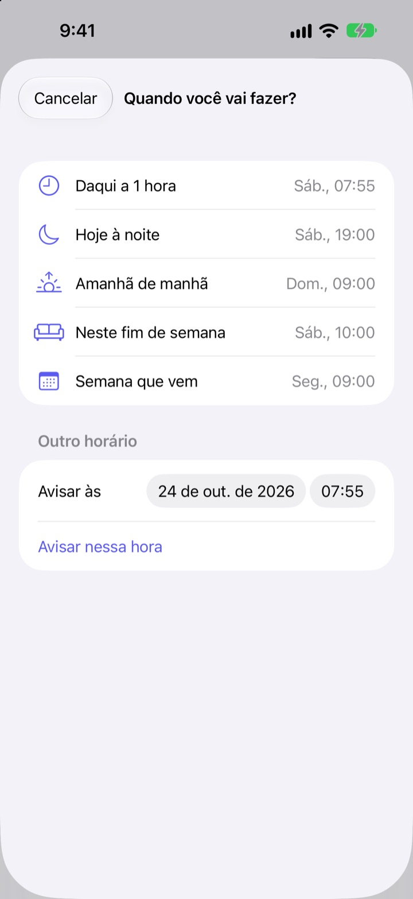

Anote agora.
Resolva à noite.
“Ah, é mesmo, preciso…” Tire da cabeça em poucas palavras e deixe para lá. À noite, resolva o que sobrou, uma coisa de cada vez.
Todos os recursos são grátis. Sem conta e sem login.

Teste aqui
Escreva algo que está na sua cabeça ou toque num exemplo. Depois aperte “Resolver agora” e dê um desfecho para cada coisa.
Até as coisas pequenas ocupam espaço na cabeça
No banho, no sinal vermelho, logo antes de dormir: “Preciso fazer aquilo.” Não tem onde anotar, então você segura na memória, e o que estava fazendo perde o foco. Os apps de tarefas pedem lista e prazo antes, e até anotar vira mais uma tarefa.
Três segundos e pronto
Abra o app e digite na linha de baixo. Sem listas, pastas ou prazos para escolher.
Toque no widget da Tela Bloqueada e ele abre numa linha em branco. Diga Lembre no Externalize para a Siri ou coloque no botão de Ação, e fica salvo sem abrir o app.

À noite, uma coisa de cada vez
Se sobrou algo, você recebe um único aviso às 21h. Se não sobrou nada, nada de aviso.
Ao começar, as coisas aparecem uma por vez, em tamanho grande. Escolha “Fazer agora”, “Escolher horário” ou “Descartar” e vem a próxima. Se leva dois minutos, ligue o timer e resolva na hora.

Nada fica esquecido
Escolha “Daqui a 1 hora”, “Hoje à noite”, “Amanhã de manhã”, “Neste fim de semana” ou “Semana que vem” e ela volta nessa hora. Na notificação você já marca “Feito”, passa para “Amanhã de manhã” ou escolhe “Descartar”.
O que espera há mais de um dia e o que você vive adiando fica marcado, e dá para ver o que sempre escapa.

Comece em três passos
- 1
Anote
Poucas palavras no app, no widget da Tela Bloqueada ou pela Siri, o que estiver mais à mão.
- 2
Permita notificações
O app pergunta uma vez, na primeira anotação. Elas trazem o aviso da noite e os horários que você escolher.
- 3
Resolva à noite
Toque no aviso ou em “Resolver agora” e dê um desfecho para cada coisa.
Direto da lista
- Tocar num item
- escolher “Feito”, “Escolher horário” ou “Descartar”
- Deslizar para a direita
- Feito (sai da lista)
- Deslizar para a esquerda
- Descartar, ou “Agendar” para escolher horário
- Resolver agora
- passar pelo que sobrou, um por vez
- Lembre no Externalize
- falar com a Siri sem abrir o app
- Ajustes ▸ Aviso da noite
- mudar o horário ou desligar
Ao agendar, “Hoje à noite” é às 19h, “Amanhã de manhã” às 9h, “Neste fim de semana” sábado às 10h e “Semana que vem” segunda às 9h. Você também pode escolher qualquer data e horário.
Perguntas frequentes
Dá para anotar sem abrir o app?
Dá. Diga Lembre no Externalize para a Siri: ela pergunta o que anotar e salva. Atribua o atalho “Anotar” ao botão de Ação em Ajustes e basta um toque.
Como adiciono o widget na Tela Bloqueada?
Toque e segure a Tela Bloqueada, toque em Personalizar e escolha a Tela Bloqueada, toque na área de widgets e adicione o Externalize. Um toque abre uma linha em branco, e ele mostra quantas coisas faltam. Também há um widget pequeno para a Tela de Início.
Posso mudar ou desligar o aviso da noite?
Toque na engrenagem no canto superior direito ▸ Aviso da noite para mudar o horário ou desligar. O padrão é 21h, e ele não toca nos dias em que não sobrou nada.
Não recebo notificações.
Se os ajustes do Externalize disserem que as notificações estão desativadas, toque no botão ali para ativá-las nos Ajustes do iPhone. Nos dias sem nada pendente, não vem aviso da noite, e isso é normal.
Como volta uma coisa agendada?
Chega uma notificação no horário escolhido. Toque e segure para escolher “Feito”, “Amanhã de manhã” ou “Descartar”. Se você não fizer nada, ela volta para “Na sua cabeça” e você resolve na próxima vez.
Dá para recuperar algo que marquei como feito ou descartei?
Não. O que foi resolvido sai da lista e não há arquivo. Se ainda está em dúvida, escolha um horário em vez de descartar.
As anotações vão para um iPhone novo?
Não. Tudo fica neste aparelho e nunca vai para o iCloud nem para um servidor. Se apagar o app, elas são apagadas também.
Em quais aparelhos funciona?
No iPhone com iOS 17 ou mais recente.
Dúvidas ou algum erro? Escreva para mizzking75@gmail.com. Informar o modelo do iPhone e a versão do iOS ajuda a gente a verificar mais rápido.